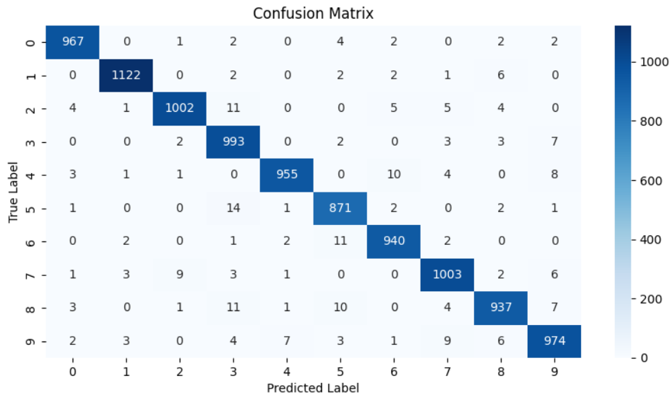
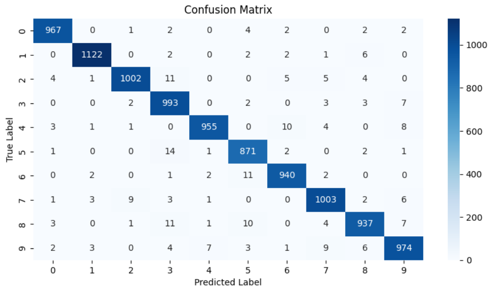

A self-driving car (sometimes called an autonomous car or driverless car) is a vehicle that uses a combination of sensors, cameras, radar and artificial intelligence (AI) to travel between destinations without a human operator. To qualify as fully autonomous, a vehicle must be able to navigate without human intervention to a predetermined destination over roads that have not been adapted for its use.
Companies developing and/or testing autonomous cars include Audi, BMW, Ford, Google, General Motors, Tesla, Volkswagen and Volvo. Google's test involved a fleet of self-driving cars -- including Toyota Prii and an Audi TT -- navigating over 140,000 miles of California streets and highways.
 
